Code
knitr::opts_chunk$set(
fig.height = 4,
warning = FALSE,
message = FALSE
)This document explores ecosystem overfishing (following Pauly and Christensen 1995) in the Northeast US.
knitr::opts_chunk$set(
fig.height = 4,
warning = FALSE,
message = FALSE
)First, we explore the data in ecodata::ppr and how it compares to landings and primary production data elsewhere in ecodata.
ecodata::pprecodata::plot_ppr(report = "NewEngland", varName = "pp")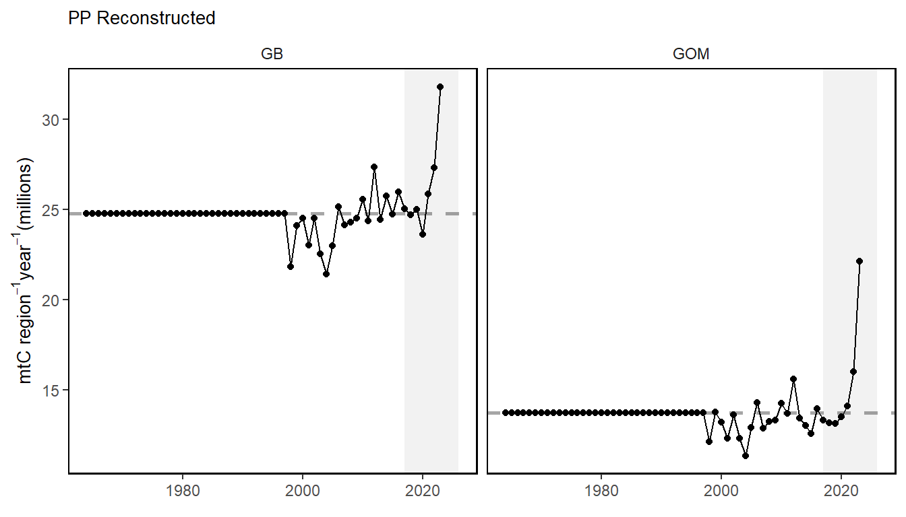
ecodata::plot_ppr(report = "MidAtlantic", varName = "pp")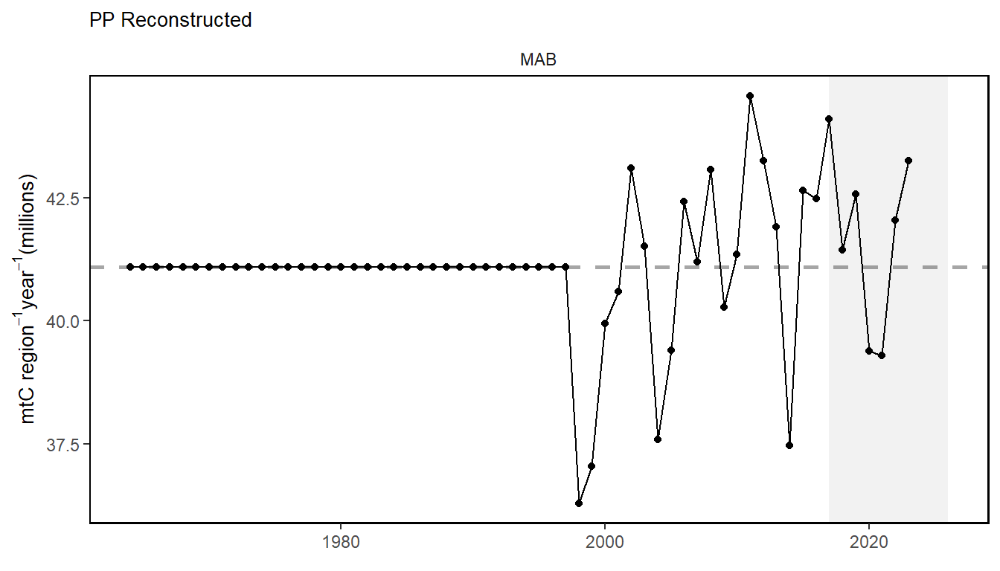
The Ryther Index has units of catch per unit area.
ecodata::plot_ppr(report = "NewEngland", varName = "ryther")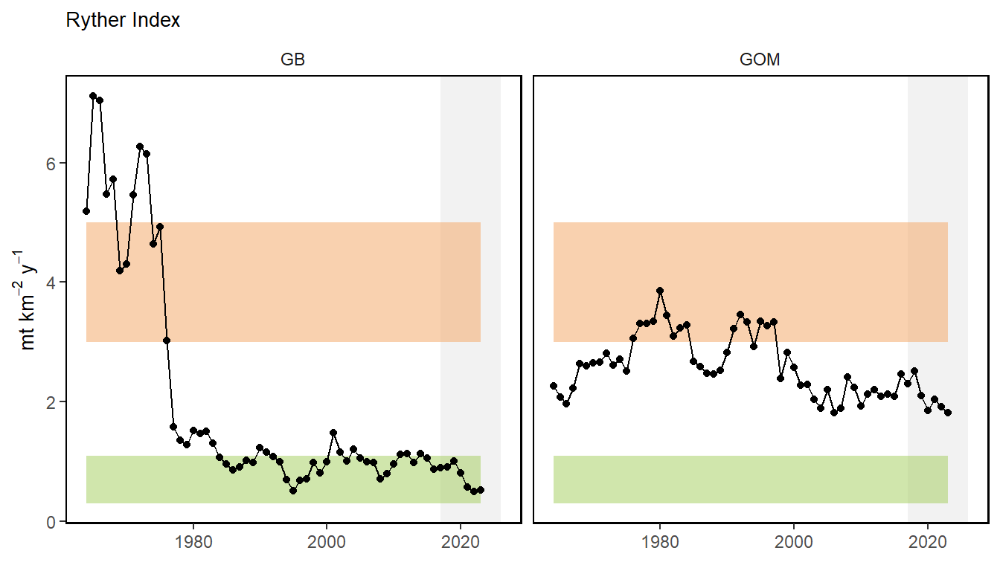
ecodata::plot_ppr(report = "MidAtlantic", varName = "ryther")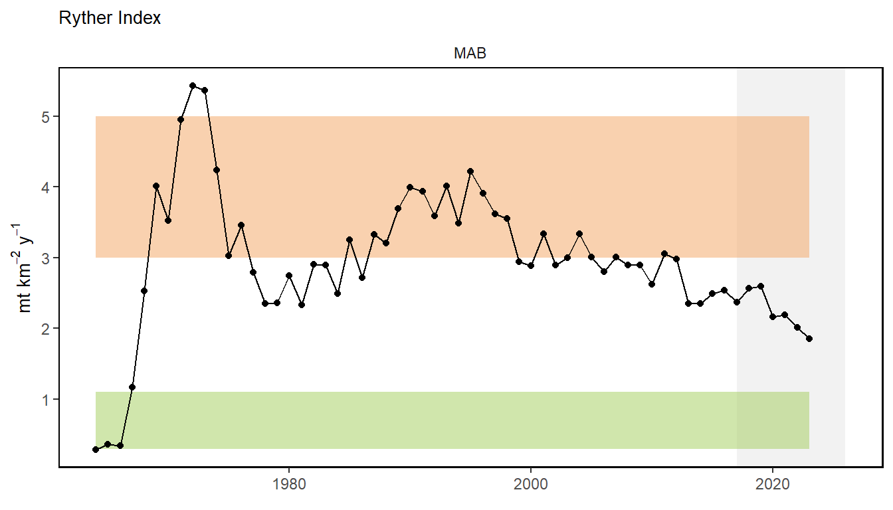
It isn’t clear why the units of the Fogarty Index are parts per thousand; the index is described as the ratio of the carbon in the catch over the carbon produced by primary production.
ecodata::plot_ppr(report = "NewEngland", varName = "fogarty")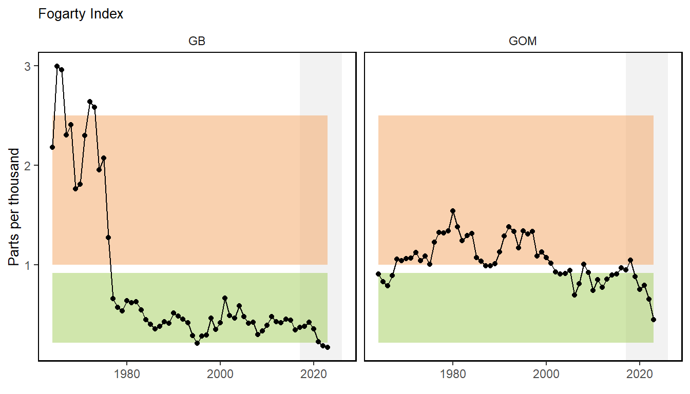
ecodata::plot_ppr(report = "MidAtlantic", varName = "fogarty")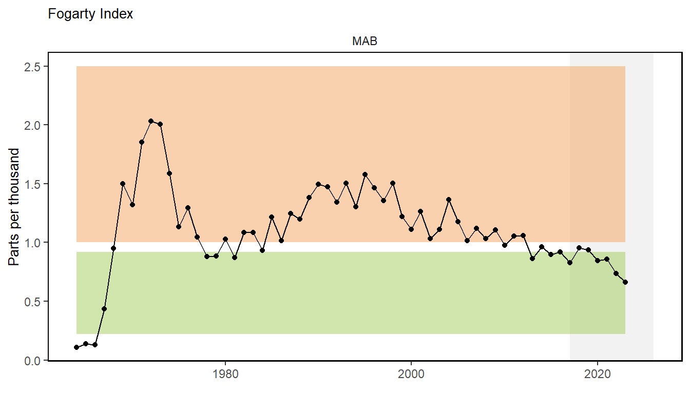
ecodata objectsRegional primary production:
ecodata::plot_annual_chl_pp(
report = "NewEngland",
EPU = "GB",
varName = "pp",
plottype = "total"
)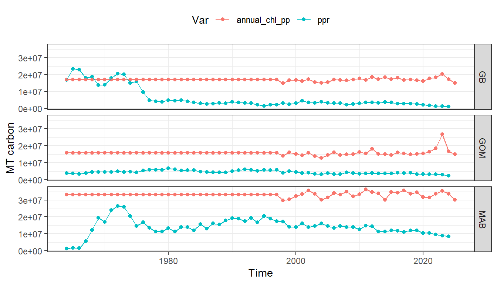
ecodata::plot_annual_chl_pp(
report = "NewEngland",
EPU = "GOM",
varName = "pp",
plottype = "total"
)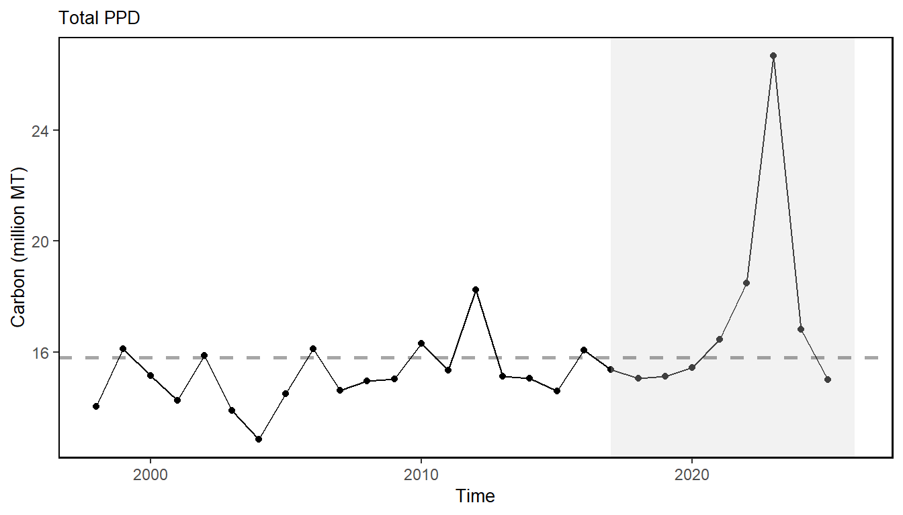
ecodata::plot_annual_chl_pp(
report = "MidAtlantic",
EPU = "MAB",
varName = "pp",
plottype = "total"
)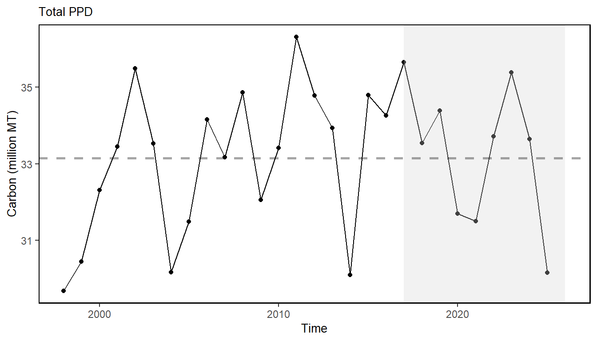
Plotting primary production from ecodata::annual_chl_pp and ecodata::ppr on the same graphs:
combined_pp <- dplyr::full_join(
ecodata::ppr |>
dplyr::filter(Var == "PP") |>
# dplyr::mutate(Source = "ecodata::ppr")|>
dplyr::select(-Units, -Var) |>
dplyr::rename(ppr = Value),
ecodata::annual_chl_pp |>
dplyr::filter(Var == "PPD_ANNUAL_MTON") |>
dplyr::mutate(Time = as.integer(gsub("A_", "", Time))#,
# Source = "ecodata::annual_chl_pp"
) |>
dplyr::select(-Units, -Var) |>
dplyr::rename(annual_chl_pp = Value)
) |>
dplyr::group_by(EPU) |>
dplyr::mutate(annual_chl_pp = ifelse(is.na(annual_chl_pp),
mean(annual_chl_pp, na.rm = TRUE), annual_chl_pp)) |>
dplyr::ungroup() |>
tidyr::pivot_longer(cols = c(ppr, annual_chl_pp), names_to = "Source", values_to = "Value") |>
dplyr::mutate(Source = dplyr::case_when(Source == "ppr" ~ "ecodata::ppr",
Source == "annual_chl_pp" ~ "ecodata::annual_chl_pp"))
combined_pp |>
ggplot2::ggplot(ggplot2::aes(x = Time, y = Value, color = Source)) +
ggplot2::geom_point() +
ggplot2::geom_line() +
ggplot2::theme_bw() +
ggplot2::facet_wrap(~EPU, ncol = 1) +
ggplot2::theme(legend.position = "top")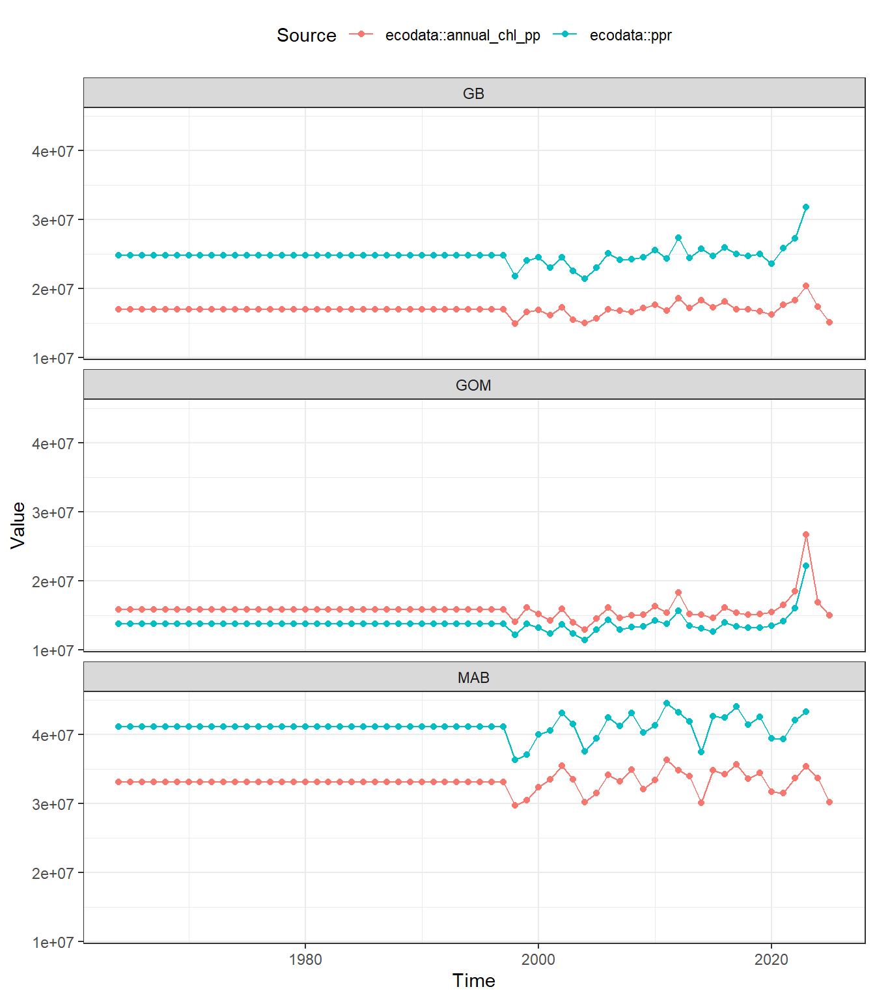
The data follow similar trends but don’t match in values.
Regional landings:
ecodata::plot_comdat(
report = "NewEngland",
varName = "landings",
plottype = "total"
)
ecodata::plot_comdat(
report = "MidAtlantic",
varName = "landings",
plottype = "total"
)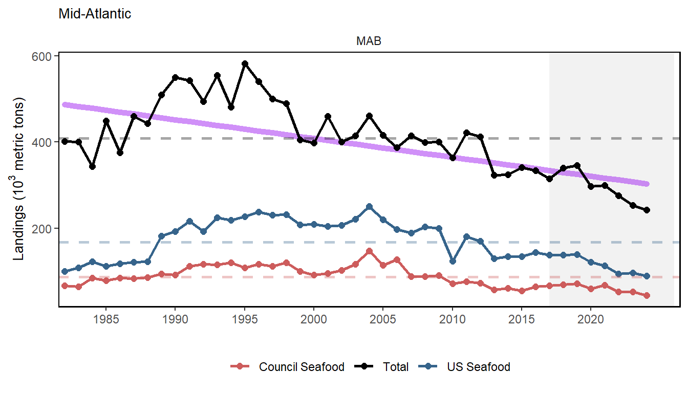
Plotting landings from ecodata::comdat and ecodata::ppr on the same graphs – multiplying the ecodata::ppr values by the regional area to produce total landings:
gb_area <- ecodata::epu_sf |>
dplyr::filter(EPU == "GB") |>
sf::st_area() /
1e6 # convert to km2
gom_area <- ecodata::epu_sf |>
dplyr::filter(EPU == "GOM") |>
sf::st_area() /
1e6 # convert to km2
mab_area <- ecodata::epu_sf |>
dplyr::filter(EPU == "MAB") |>
sf::st_make_valid() |>
sf::st_area() /
1e6 # convert to km2combined_landings <- dplyr::bind_rows(
ecodata::ppr |>
dplyr::filter(Var == "Ryther") |>
dplyr::mutate(Source = "ecodata::ppr",
Value = Value * dplyr::case_when(
EPU == "GB" ~ gb_area,
EPU == "GOM" ~ gom_area,
EPU == "MAB" ~ mab_area
)) |>
dplyr::mutate(Value = as.numeric(Value)),
ecodata::comdat |>
dplyr::filter(Var == "Landings") |>
dplyr::mutate(Source = "ecodata::comdat")
)
combined_landings |>
dplyr::filter(EPU %in% c("GB", "GOM", "MAB")) |>
ggplot2::ggplot(ggplot2::aes(x = Time, y = Value, color = Source)) +
ggplot2::geom_point() +
ggplot2::geom_line() +
ggplot2::theme_bw() +
ggplot2::facet_wrap(~EPU, ncol = 1) +
ggplot2::theme(legend.position = "top")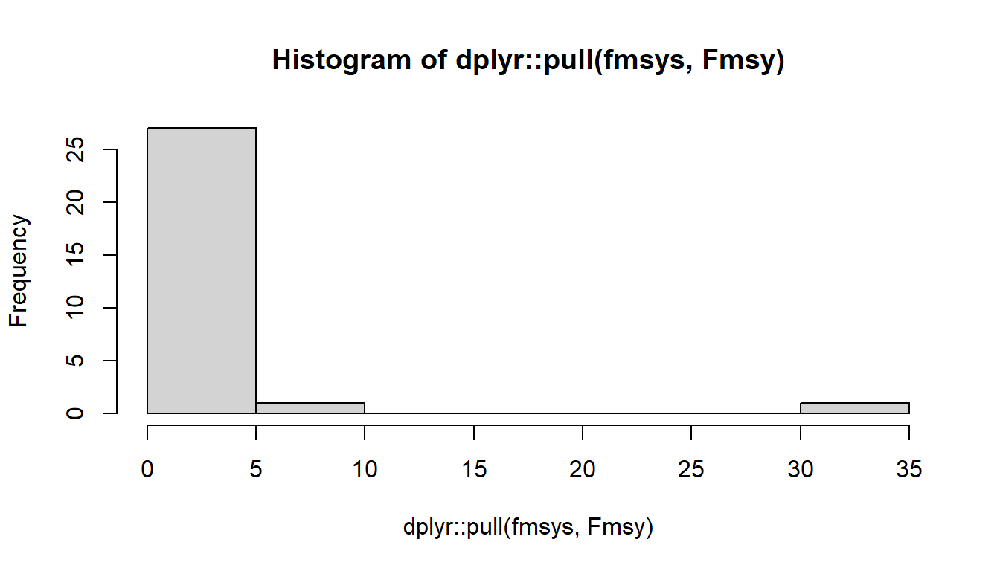
Again, trends are similar but the values don’t match.
total_data <- dplyr::bind_rows(
combined_pp |>
dplyr::mutate(Var = "PP"),
combined_landings |>
dplyr::mutate(Var = "Landings")
) |>
dplyr::select(-Units) |>
dplyr::mutate(Source = dplyr::case_when(
Source != "ecodata::ppr" ~ "ecodata::comdat and ecodata::annual_chl_pp",
TRUE ~ Source
)) |>
tidyr::pivot_wider(names_from = Var, values_from = Value) |>
dplyr::mutate(
ppr = (Landings / 9) * (1 / 0.10)^2.5,
ratio = ppr / PP
)First, simply plot landings and primary production on the same scale:
total_data |>
dplyr::filter(EPU %in% c("GB", "GOM", "MAB")) |>
tidyr::pivot_longer(cols = c(ppr, PP), names_to = "Var", values_to = "Value") |>
ggplot2::ggplot(ggplot2::aes(x = Time, y = Value, color = Var)) +
ggplot2::geom_point() +
ggplot2::geom_line() +
ggplot2::theme_bw() +
ggplot2::facet_grid(rows = ggplot2::vars(EPU),
cols = ggplot2::vars(Source)) +
ggplot2::theme(legend.position = "top")
Using the coefficients from Pauly and Christensen (1995) – 10% transfer efficiency and mean trophic level of 3.5
Plot the ratio of primary production required:
total_data |>
dplyr::filter(EPU %in% c("GB", "GOM", "MAB")) |>
ggplot2::ggplot(ggplot2::aes(x = Time, y = ratio, color = Source)) +
ggplot2::geom_point() +
ggplot2::geom_line() +
ggplot2::theme_bw() +
ggplot2::facet_wrap(~EPU, ncol = 1) +
ggplot2::theme(legend.position = "top")
The difficulty with these calculations is that they rely on assumptions about transfer efficiency and trophic level. Additionally, the energetic accounting of how much primary production is “available” to be harvested as catch is complicated. Predators in the ecosystem need a certain amount of prey for their own diets. In addition to supporting the biomass caught and consumed, primary production also fuels the general functioning of the ecosystem, including supporting the biomass of non-harvested species and the metabolic needs of all organisms. A rough estimate is that up to 10% of primary production is sequestered in sediments, reducing the amount available to organisms.
Can we estimate the biomass needed for predation by comparing Fmsy to M?
fmsys <- stocksmart::stockAssessmentSummary |>
dplyr::filter(stringr::str_detect(`Regional Ecosystem`, "Northeast")) |>
dplyr::group_by(`Stock Name`) |>
dplyr::filter(`Assessment Year` == max(`Assessment Year`))
fmsys |>
dplyr::pull(Fmsy) |>
hist()
Not sure what is going on with silver hake (the high outlier) – going to drop…
fmsys |>
dplyr::filter(Fmsy < 5) |>
dplyr::pull(Fmsy) |>
hist()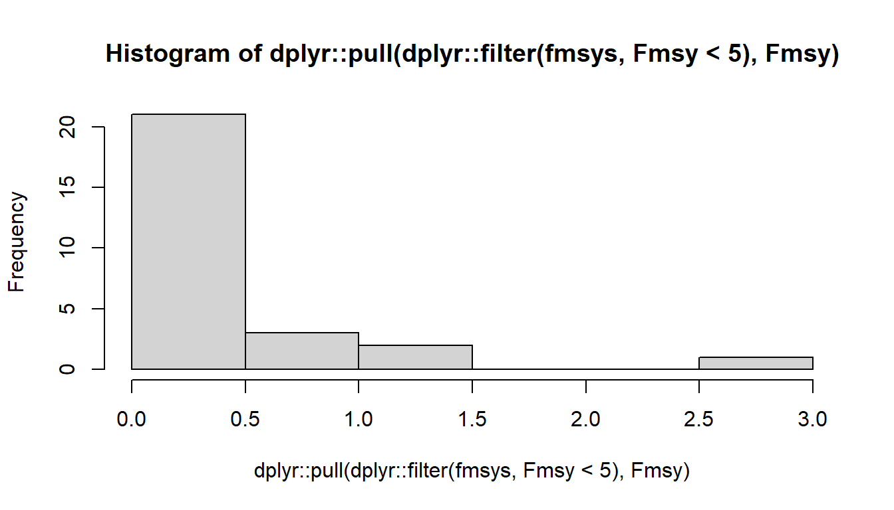
Looks better, here’s the average:
fmsys |>
dplyr::filter(Fmsy < 5) |>
dplyr::pull(Fmsy) |>
mean(na.rm = TRUE)[1] 0.4514444Fs are reported in all different units, so just going to assume that everything is being fished at Fmsy. That gives us F = 0.45 and (assuming) M = 0.2, so M is 44% of the catch.
We can also assume that discards are 44% of the catch, per Pauly and Christensen.
Roughly, this means that an additional amount equivalent to the PPR is also needed to support the biomass of the catch (44% for discards, 44% for predation). So we would definitely want our PPR to be below 50% to be sustainable, because this calculation doesn’t incorporate numbers for metabolic needs of the organisms in the ecosystem or the biomass of non-harvested species. Pauly and Christensen give the qualitative description that 25% PPR is “high” (pg 256).
Let’s see how we’ve done relative to thresholds of 0.25 and 0.5:
total_data |>
dplyr::filter(EPU %in% c("GB", "GOM", "MAB"),
Source != "ecodata::ppr") |>
ggplot2::ggplot(ggplot2::aes(x = Time, y = ratio, color = EPU)) +
ggplot2::geom_point() +
ggplot2::geom_line() +
ggplot2::geom_hline(yintercept = 0.25, linetype = "dashed", color = "orange") +
ggplot2::geom_hline(yintercept = 0.5, linetype = "dashed", color = "red") +
ggplot2::theme_bw() +
ggplot2::theme(legend.position = "top")
Not great! Georges Bank was unequivocally overfished in the 1970s (discards were probably lower then, but still – PPR over 1 is not sustainable). The Mid-Atlantic has actually sustained the highest PPR over time, though recent declines could signify stress in the ecosystem.
What could this data mean for the future? It looks like the Gulf of Maine and Goerges Bank could potentially support more removals, though Georges Bank in particular may need more time to rebound from past overfishing. More research is needed to understand the additional metabolic energetic requirements and to determine the time scale of “bounce back” after overexploitation.
return_ppr <- function(landings, pp, te, tl) {
ppr = (landings / 9) * (1 / te)^(tl -1)
ratio = ppr / pp
return(ratio)
}
total_data2 <- total_data |>
dplyr::filter(EPU %in% c("GB", "GOM", "MAB")) |>
dplyr::mutate(
ratio_te5_tl3.5 = return_ppr(Landings, PP, te = 0.05, tl = 3.5),
ratio_te5_tl4 = return_ppr(Landings, PP, te = 0.05, tl = 4),
ratio_te5_tl3 = return_ppr(Landings, PP, te = 0.05, tl = 3),
ratio_te10_tl3.5 = return_ppr(Landings, PP, te = 0.1, tl = 3.5),
ratio_te10_tl4 = return_ppr(Landings, PP, te = 0.1, tl = 4),
ratio_te10_tl3 = return_ppr(Landings, PP, te = 0.1, tl = 3),
ratio_te15_tl3.5 = return_ppr(Landings, PP, te = 0.15, tl = 3.5),
ratio_te15_tl4 = return_ppr(Landings, PP, te = 0.15, tl = 4),
ratio_te15_tl3 = return_ppr(Landings, PP, te = 0.15, tl = 3),
) |>
tidyr::pivot_longer(cols = starts_with("ratio"), names_to = "method", values_to = "ratio") |>
dplyr::filter(method != "ratio",
Source != "ecodata::ppr") |>
dplyr::mutate(transfer_efficiency = dplyr::case_when(
grepl("te5", method) ~ "5%",
grepl("te10", method) ~ "10%",
grepl("te15", method) ~ "15%"
),
trophic_level = dplyr::case_when(
grepl("tl3.5", method) ~ "3.5",
grepl("tl4", method) ~ "4",
grepl("tl3", method) ~ "3"
)) for (i in c("MAB", "GB", "GOM")) {
plt <- total_data2 |>
dplyr::filter(EPU == i) |>
ggplot2::ggplot(ggplot2::aes(x = Time, y = ratio, color = trophic_level)) +
ggplot2::geom_point() +
ggplot2::geom_line() +
ggplot2::theme_bw() +
ggplot2::facet_grid(rows = ggplot2::vars(transfer_efficiency),
scales = "free") +
ggplot2::theme(legend.position = "top") +
ggplot2::ggtitle(i)
print(plt)
}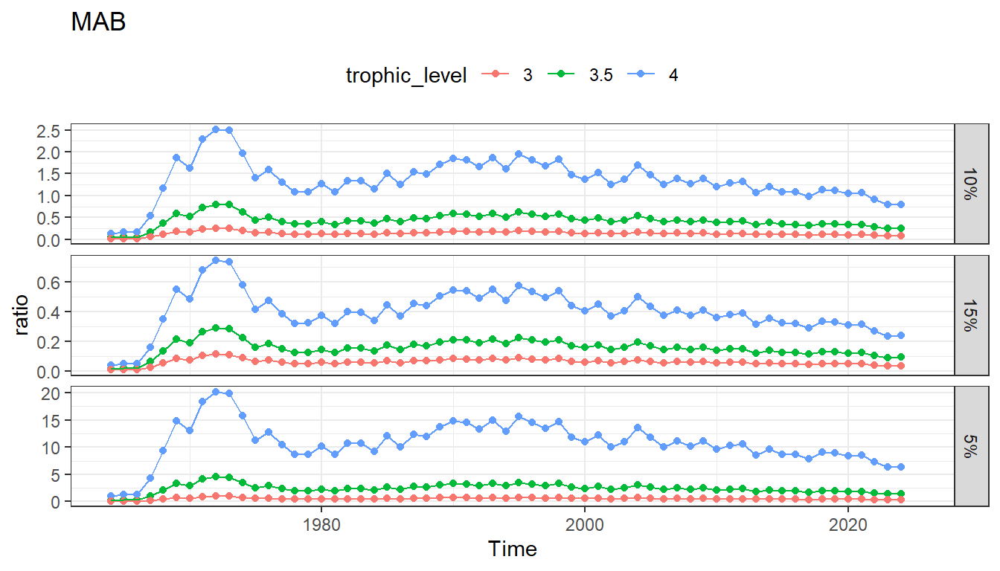
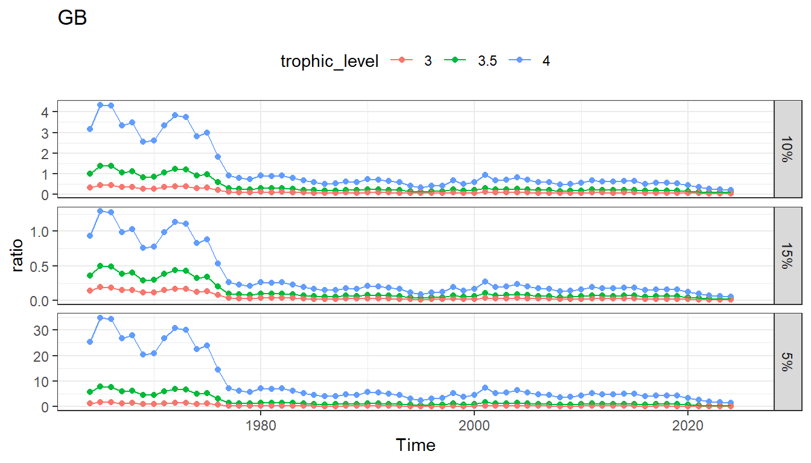
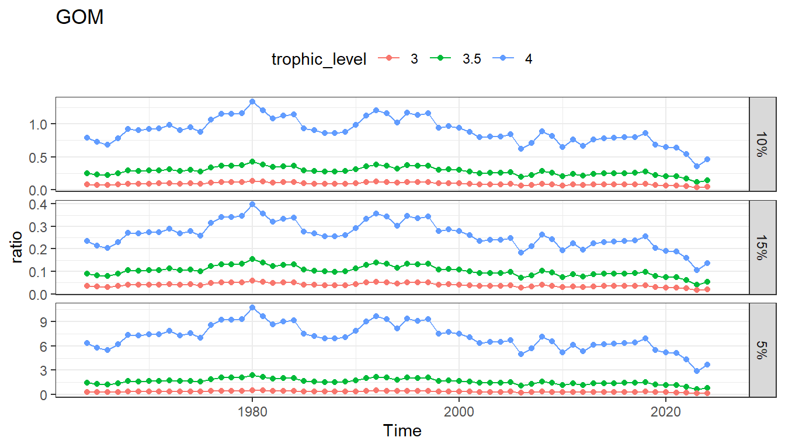
Assuming a 44% buffer for discards (as in Pauly and Christensen, Table 2):
for (i in c("MAB", "GB", "GOM")) {
plt <- total_data2 |>
dplyr::filter(EPU == i) |>
ggplot2::ggplot(ggplot2::aes(x = Time, y = ratio * 1.44, color = trophic_level)) +
ggplot2::geom_point() +
ggplot2::geom_line() +
ggplot2::theme_bw() +
ggplot2::facet_grid(rows = ggplot2::vars(transfer_efficiency),
scales = "free") +
ggplot2::theme(legend.position = "top") +
ggplot2::ggtitle(i)
print(plt)
}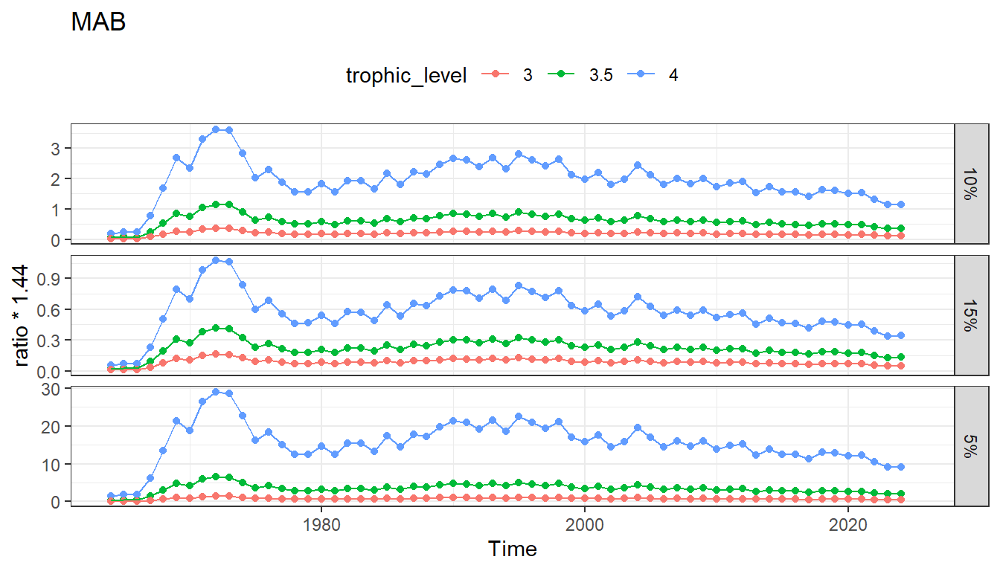
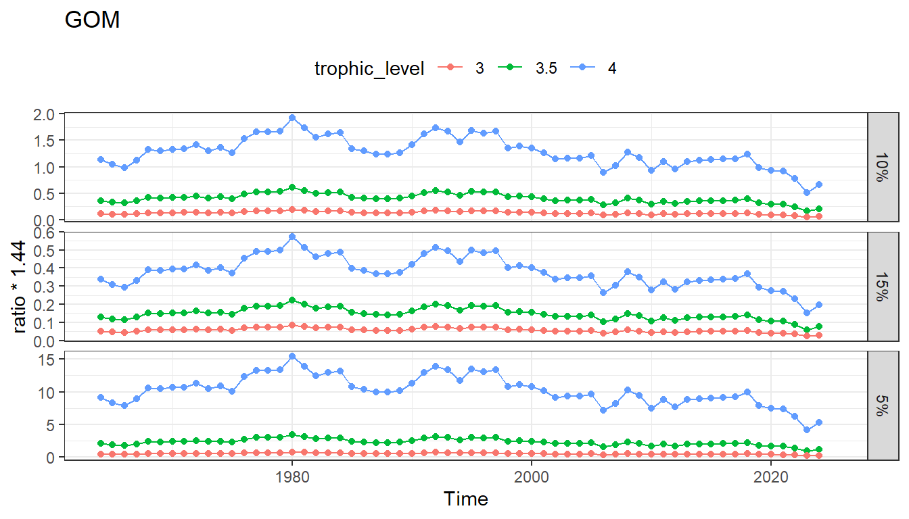